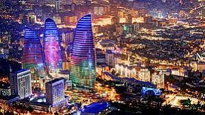

Baki
Xəzər dənizinin qərb sahillərində, Abşeron yarımadasının cənubunda yerləşən tarixi bir şəhər. Bakıya küləklər şəhəri də deyirlər. Quru subtropik iqlimi var. Ümumi sahəsi 2130 km2-dir və 11 administrativ rayondan ibarətdir.

Gence
Gence haqqinda melumat saytımızda təqdim olunur. Qədim Azərbaycan şəhəri olan Gəncə gözəlliyi və mədəniyyəti ilə dillərdə gəzirdi. Nizami Gəncəvi kimi dahilərin beşiyi olan Gəncəmiz günü-gündən gözəlləşir, abadlaşır. Bəs sizlər Gence haqqinda melumat almaq üçün daha çox bilgi əldə etmək istərdinizmi?
İkinci ən böyük şəhər olan Gəncə Gəncə şəhəri Kiçik Qafqazın şimal-şərq tərəfində, Gəncə-Qazax düzənliyində, Gəncə çayın hər iki sahilində yerləşir.
.jpg)
Lenkran
Lənkəran rayonunun ərazisi Xəzər dənizinin şərq sahillərini və Talış dağlarına qədər olan hissədə bütün Lənkəran ovalığını əhatə edir. Xəzər dənizinin buradakı sahillərində çoxlu rahat qumlu çimərliklər salınmışdır. Rütubətli subtorpik iqlim, qışın sərt keçməməsi, quru və qızmar yay günləri, yağışlı payız fəsli bu regionun zəngin flora və faunasını şərtləndirmişdir. Lənkərançay, Verapvul, Qumbaşı, Boladı çayları yazda və payızda əsasən yağış suları hesabına daşır, yayda isə sakitləşir və nəzərə çarpacaq dərəcədə dayazlaşırlar. Buna görə də bu ərazidə kənd təsərrüfatı bitkilərinin suvarılması məqsədilə Xanbulançay su anbarı yaradılmışdır.
.jpg)